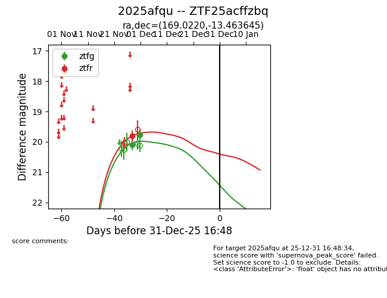
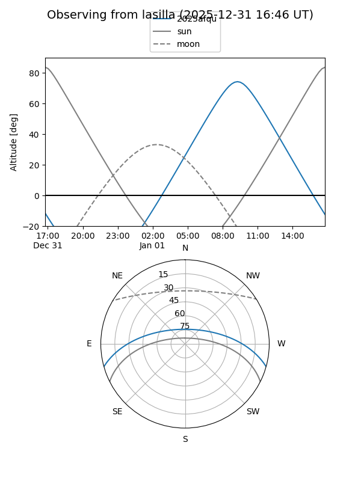
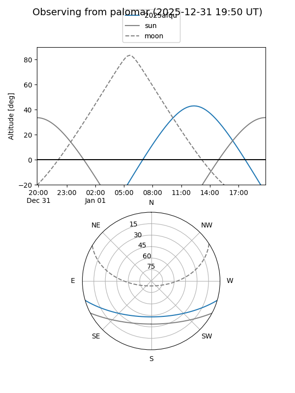
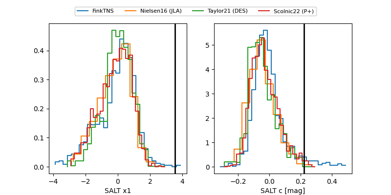

2025afqu
Target 2025afqu at 2025-12-18 11:17
Aliases and brokers:
FINK: fink-portal.org/ZTF25acffzbq
Lasair: lasair-ztf.lsst.ac.uk/objects/ZTF25acffzbq
ALeRCE: alerce.online/object/ZTF25acffzbq
TNS: wis-tns.org/object/2025afqu
YSE: ziggy.ucolick.org/yse/transient_detail/2025afqu
alt names
ZTF25acffzbq (ztf,fink_ztf)
2025afqu (tns,yse)
Coordinates:
equatorial (ra, dec) = 169.0220,-13.46365
equatorial (HMS+DMS) = 11:16:05.29,-13:27:49.12
galactic (l, b) = (270.2583,+43.27731)
Photometry
last ztfg=19.77, ztfr=19.81
2 ztfg, 1 ztfr detections
Lightcurve

Visibility


Additional plots
